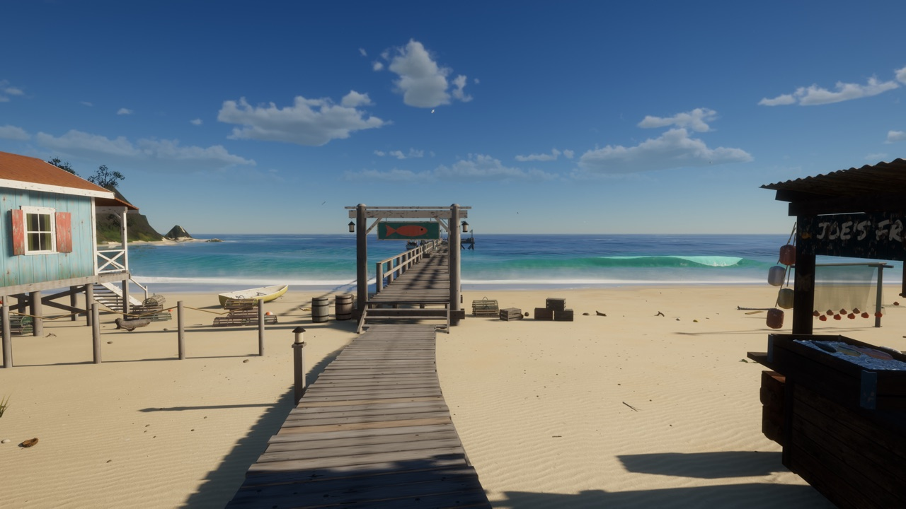

Tidewater
Island fishing, open water, and a village to come home to.

▶ Play Tidewater · v1.0.0 · hosted edition 1
Before you play
Requires a WebGPU-capable browser and GPU. Use a recent Chrome, Edge, or Safari with hardware acceleration. This version uses a keyboard and mouse, not touch controls. The first launch compiles shaders and may take a minute or two.
Controls
WASD move · Mouse look · Shift sprint · Space jump/swim up · C dive · E interact/board boat · R fishing rod · Hold and release left mouse to cast; click to strike; hold to reel · I cooler/fish log · H settings · F1 all controls · Esc release mouse.
Sell your catch to Joe and buy upgrades from Marta. Progress saves in this browser, separately on each website; saves from the original site do not transfer automatically.
Creator & licence
Created by David Greenheck / DRG Software Solutions LLC. This is a self-hosted copy, not a game created by Jez237. Original gameplay and assets are retained.
MIT licence · Full third-party credits · Original game
© 2026 DRG Software Solutions LLC. Third-party assets retain their respective licences.